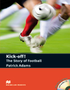

The Story of Football |
 |
My name is Vasilena Vasileva. I’m from Bulgaria and I’m 13 years old. What made me write this review is not only my immense love to football but also the World Cup 2010 which is held now in the Republic of South Africa. I haven’t missed any match so far. For the last one month I’ve been sitting in front of the TV and enjoying the game. I’m looking forward to watching the final match this evening! Although I am a girl I like football very much. I am a real fan of football! That is why when I saw Kick- off! The Story of Football by Patrick Adams for the first time I decided at once that I should read by all means exactly this book. And I did so. I wanted to have this book very much and I received it as a present just a few days before The World Cup began in the Republic of South Africa. I expected to learn a lot of new things about football from the book. However this book beat all my expectations by far; I learnt much more than I thought I would learn. The book begins with the story of football. It is a very old game. Then you can read about its simple rules and about its development through the centuries. You learn that England is considered to be a motherland of football. Next very exciting part of the book for me is the chapter about football in Europe. In this part the author talks about some football clubs in different European countries, how these clubs were formed, who founded them, what titles and troph ies they won. For example, I was impressed by the fact that the World Cup in 1958 in Europe was won by Brazil! For some people, including me, of course, football plays very important role in their lives. The victory or the loss of their favourite team means a lot for them. I, for example, can’t believe my life without this game called football! I liked the chapter about Champions League and World Cup , which this year is held in the Republic of South Africa. What else I liked about the book is the author’s style. The adjective I would use to describe it is interesting. Every word in a given sentence is put in such a way that the reader can understand easily what exactly the author wants to say. All things mentioned in the book are very clear to me maybe because I am interested in everything connected with football – rules, teams, footballers. But what I liked most in the book was about the managers of different teams. I was really happy to see the manager of my favourite team, Manchester United , Sir Alex Ferguson. I would like to say once more that I liked the book very, very much. I learnt exactly where and how football began, some interesting facts about some teams and footballers. I also was happy to learn new things about the manager of my favourite team. After I read the last page of the book I felt happy and sad at the same time. I was happy because I had learnt a lot of new things about my favourite game and sad because the book had finished but I wanted to read more and more… After having read this book my opinion that football is the greatest game in the world didn’t change. On the contrary I believe it more strongly! I think this book is unique. I liked the way the author arranged every part of the book and everything described there. In fact there wasn’t anything in the book I didn’t like. I would read it again and again, million times. I strongly recommend this book to everybody who likes this ancient game called football. Please, read it! You won’t be disappointed! |